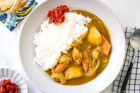

Curry

Description
Curry is a staple in many differnt cultures and blends
flavors and spices in a way that is unimaginable.
This curry is a japnese curry I learned from a friend!
Ingredients
- 1 lb protein of choice
- 13 oz onions
- 3.5 oz carrots
- 5 oz potatoes
- 1 tbsp cooking oil
- 2 1/4 water
- 1 box S&B Golden Curry
Curry is great with rice
- 1 cup of rice
- 2 cups of water
- stove top pot
SIDE NOTE curry is great with a variety
of different ingredients, feel free to have some fun with what you
throw in yours. Apples, sweet potatoes, etc try a bunch
Steps
- Pour cooking oil in big pot and throw chopped veggies in
- While watching your veggies, begin cooking your protein
- Once protein cooked, strain or remove from pan and add to now cooked veggies
- Turn heat up and add water in to pot with all ingredients
- Bring all to a good boil and cover the pot for 15 minutes, stirring occasionally
- After lower heat to lo and break S&B Golden Curry
packet and spread evenly into pot mixing it all together
- stir until all seasoning is evenly spread and no lumps are found
- let sit for 5 minutes
- Serve
Rice Bonus
- Bring water to boil
- Pour rice in
- Cover for 10-15 minutes
- Serve